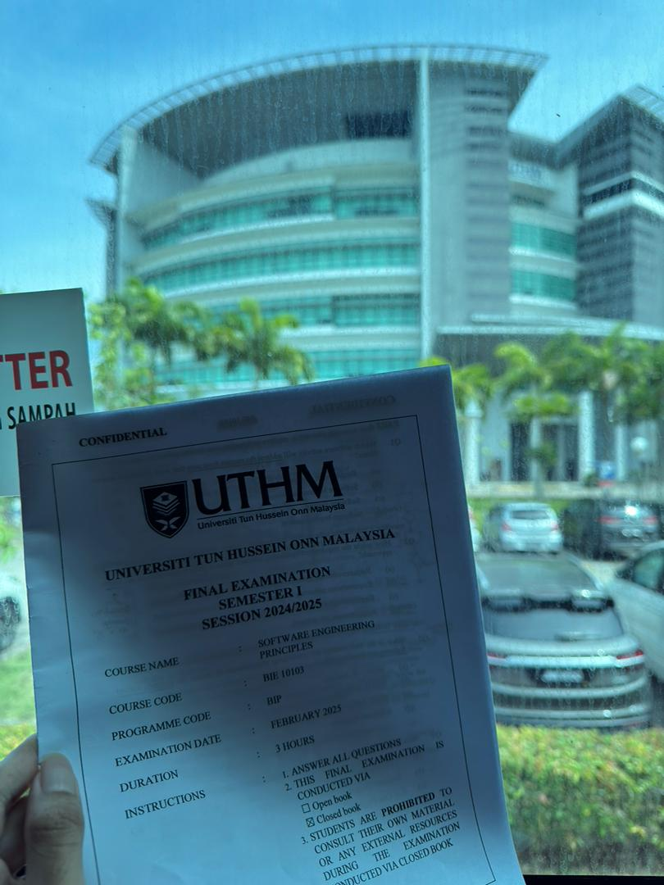

Section 1: About Me!

My name is Muhammad Afiq bin Rudy Azmir (Matrix No. CI220139), and I am currently pursuing a Bachelor’s Degree in Software Engineering at UTHM. I am now in my fourth semester out of seven.
Before joining Software Engineering, I actually took a different path. In 2022, I first enrolled at UTHM under the Bachelor of Mechanical Manufacturing Engineering program. Although I had a strong foundation in engineering, I realized that it wasn’t the direction I truly wanted to pursue.
During my first year, I decided to take a one-semester break to chase my dream of becoming a pilot. That experience helped me discover my real passion — solving problems through logic and technology. Later, I applied for a program transfer to Software Engineering and have been loving it ever since.
Section 2: My Daily Routine @ UTHM

I usually travel to campus by bus, and my day often begins as early as 8 a.m., depending on my class schedule. My classes run from Monday to Thursday, while I like to keep Friday free for leisure activities, personal study, and a bit of rest.
I live in Kolej Kediaman Perwira, which is about 2 kilometers from campus. Fortunately, there are buses provided to transport us to class. It can get a little crowded on Monday mornings, and sometimes I arrive slightly later than usual—but over time, I’ve gotten used to it.
What I enjoy most about living at UTHM is how affordable and convenient everything is. From food to groceries and daily essentials, everything I need is just within walking distance of my college. Life here is simple, practical, and comfortable — and I really enjoy that balance.